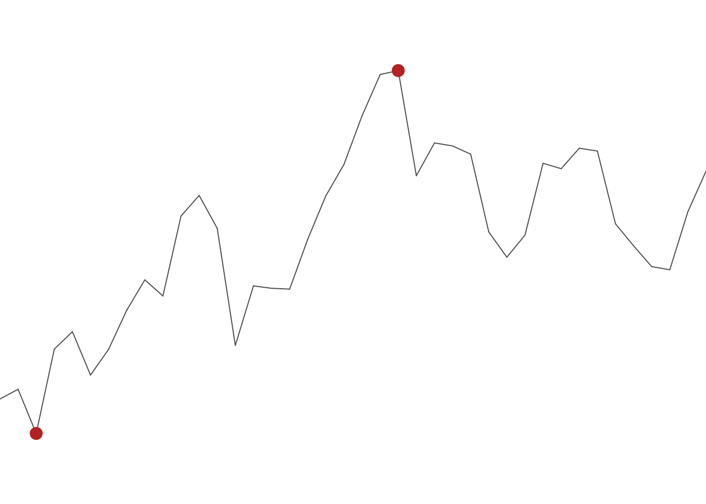
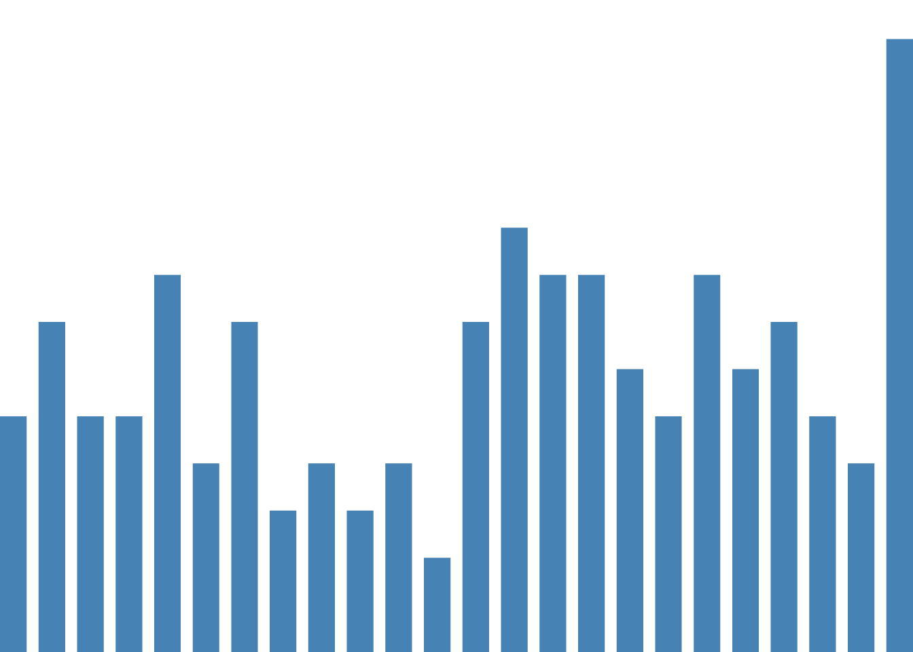
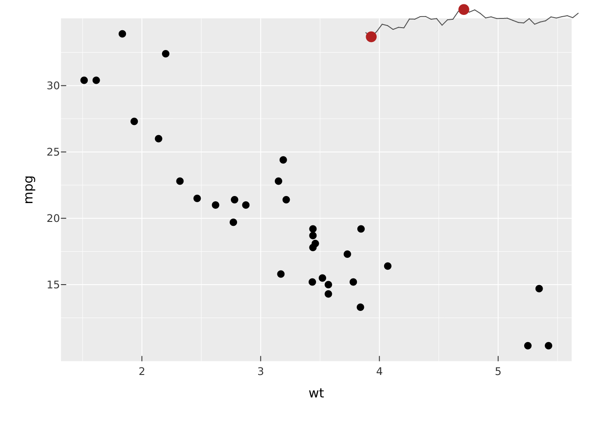
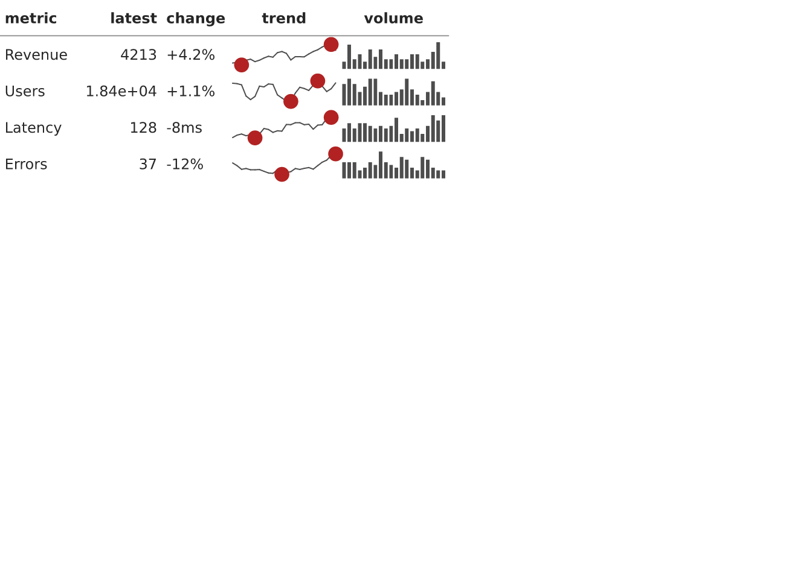

vplot(mtcars) |>
mark_point(x = wt, y = mpg) |>
facet_wrap(~cyl, ncol = 3)
There are two different reasons to end up with a grid of panels, and vellumplot keeps them separate. Faceting takes one plot and splits it by a variable, so every panel shares the same encodings and (by default) the same scales. Composition takes several independent plots, each its own spec, and arranges them into a single figure. Use faceting for small multiples of the same view; use composition for a dashboard of different views.
facet_wrap() lays panels out in a ribbon wrapped to ncol or nrow.
vplot(mtcars) |>
mark_point(x = wt, y = mpg) |>
facet_wrap(~cyl, ncol = 3)
facet_grid() puts panels on a 2-D grid defined by a rows ~ cols formula, which is the right tool when you are crossing two variables.
vplot(mtcars) |>
mark_point(x = wt, y = mpg) |>
facet_grid(vs ~ am)
By default position scales are shared across panels so the axes line up and panels are comparable. When panels cover very different ranges, free them per panel with scales = "free_x", "free_y", or "free".
vplot(mtcars) |>
mark_point(x = wt, y = mpg) |>
facet_wrap(~cyl, scales = "free")
scales = "free_y" is sugar for the underlying resolve_scale() lattice, which lets you set the policy per aesthetic directly. These two are equivalent:
vplot(mtcars) |> mark_point(x = wt, y = mpg) |>
facet_wrap(~cyl, scales = "free_y")
vplot(mtcars) |> mark_point(x = wt, y = mpg) |>
facet_wrap(~cyl) |> resolve_scale(y = "independent")Colour and size scales (and their legends) stay shared across panels, so one legend describes the whole figure.
To place different plots side by side, build each one and combine them. concat() (and its friends hconcat() and vconcat()) arrange plots into a grid; by default they collect the legends into one shared guide.
p1 <- vplot(mtcars) |> mark_point(x = wt, y = mpg, color = factor(cyl))
p2 <- vplot(mtcars) |> mark_boxplot(x = factor(cyl), y = mpg)
p3 <- vplot(mtcars) |> mark_histogram(x = mpg, bins = 10)
concat(p1, p2, p3, ncol = 3)
Control the shape with ncol/nrow, the relative sizes with widths/heights, and irregular layouts with a design string. plot_spacer() drops an empty cell, and wrap_plots() takes a list of plots when you have assembled them programmatically.
inset() floats one plot over another, positioned by fractional coordinates of a reference box. Good for an overview-plus-detail figure.
main <- vplot(mtcars) |> mark_point(x = wt, y = mpg)
mini <- vplot(mtcars) |> mark_histogram(x = mpg, bins = 8)
inset(main, mini, left = 0.6, bottom = 0.6, right = 0.98, top = 0.98)
vsparkline() is a compact, axis-free chart of a single series, sized in physical units (mm by default) so it reads as a word-sized graphic. It is a plain PlotSpec — render it, or inset() it into a figure. Three shapes: a "line" trend (with a dot on its extremes or last point), a "bar" column micro-chart, and a "winloss" chart of equal up/down bars.
set.seed(1)
vsparkline(cumsum(rnorm(40)), width = 60, height = 16)
vsparkline(rpois(24, 6), type = "bar", color = "steelblue", width = 60, height = 16)
Because it is a PlotSpec, a sparkline drops into any composition — e.g. floated onto a plot as a tiny trend indicator:
spark <- vsparkline(cumsum(rnorm(40)))
inset(main, spark, left = 0.62, bottom = 0.9, right = 0.98, top = 0.99)
vtable() lays a data frame out as a grid of cells: ordinary columns render as text, and a list-column of numeric vectors renders as a per-row sparkline. The whole table is one vector scene, so it prints and exports like any plot — chart-in-table without leaving the plotting pipeline.
set.seed(1)
df <- data.frame(
metric = c("Revenue", "Users", "Latency", "Errors"),
latest = c(4213, 18402, 128, 37),
change = c("+4.2%", "+1.1%", "-8ms", "-12%")
)
df$trend <- lapply(1:4, function(i) cumsum(rnorm(24)))
df$volume <- lapply(1:4, function(i) rpois(20, 6))
vtable(df, spark = list(trend = "line", volume = "bar"), row_height = 8)
Map a column to a type ("line"/"bar"/"winloss") or to a builder function for full control, e.g. spark = list(trend = \(v) vsparkline(v, color = "steelblue")).
annotate("sparkline", …) drops a sparkline at a data coordinate — a little trend callout inside a plot. More generally, annotate("grob", grob = …) places any vellum grob (or a PlotSpec) at a coordinate, sized in physical units and anchored by halign/valign.
gt table
Beyond the native vtable(), you can add a vellum sparkline column to a gt table — keeping all of gt’s formatting and theming. gt_vsparkline() renders a list-column of numeric vectors as inline-SVG sparklines (HTML output).
library(gt)
#>
#> Attaching package: 'gt'
#> The following object is masked from 'package:vellumplot':
#>
#> md
set.seed(1)
df <- data.frame(metric = c("Revenue", "Users", "Latency", "Errors"))
df$trend <- lapply(1:4, function(i) cumsum(rnorm(24)))
df$volume <- lapply(1:4, function(i) rpois(20, 6))
gt(df) |>
gt_vsparkline(trend, type = "line") |>
gt_vsparkline(volume, type = "bar", color = "#4682b4")| metric | trend | volume |
|---|---|---|
| Revenue | ||
| Users | ||
| Latency | ||
| Errors |
Under the hood this uses plot_svg(), which turns any vellumplot object into a self-contained SVG string — so the same trick embeds a chart inline in reactable / DT cells or a Quarto callout, not just gt. inline = TRUE drops the XML prolog so the fragment goes straight into a paragraph, and recolor = c(grey30 = "currentColor") makes the ink follow the surrounding text colour (so it adapts to dark mode):
plot_svg(
vsparkline(cumsum(rnorm(20)), color = "grey30"),
inline = TRUE, recolor = c(grey30 = "currentColor")
)repeat_() builds a small multiple by repeating one plot template across a set of values, the composition-side counterpart to faceting when you want each panel to be a fully independent plot rather than a shared-scale small multiple.
Faceting and composition also compose with each other: a faceted plot is still a spec, so it can go straight into a concat(). Once your figure looks right, send it to a file the same way as any plot, with render_plot() (see Get started).